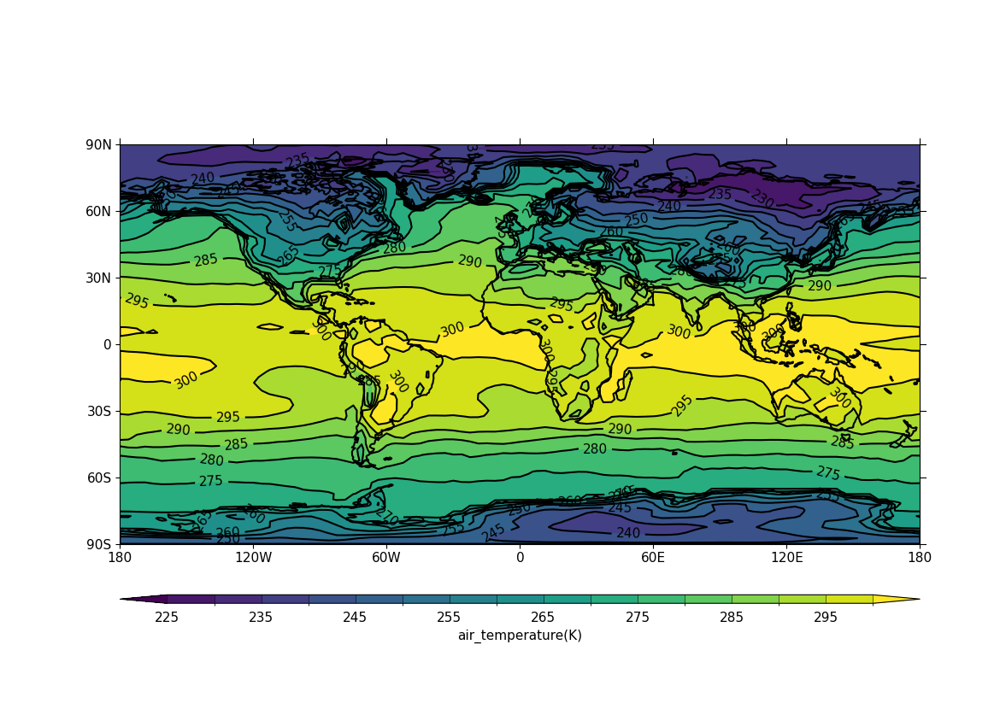
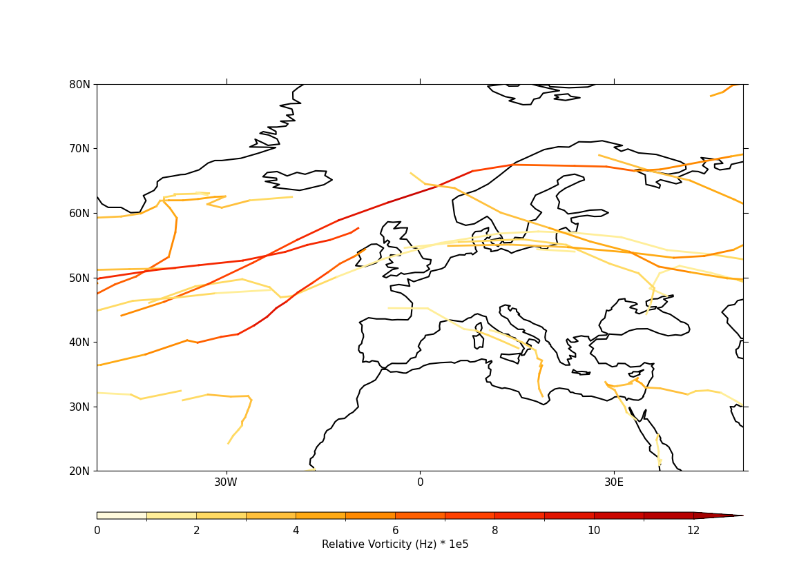
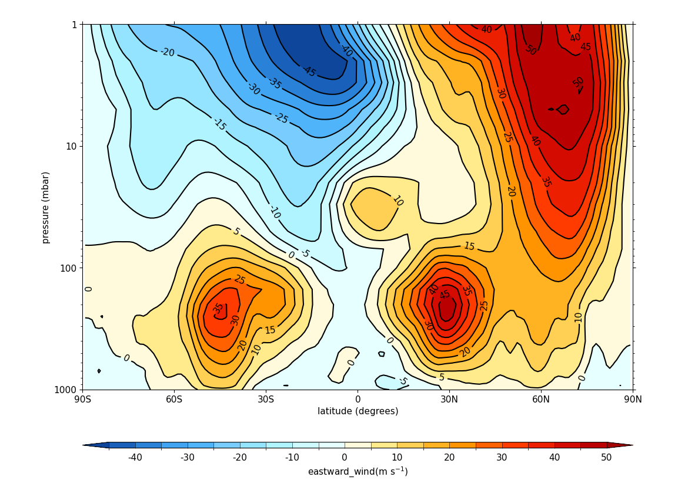
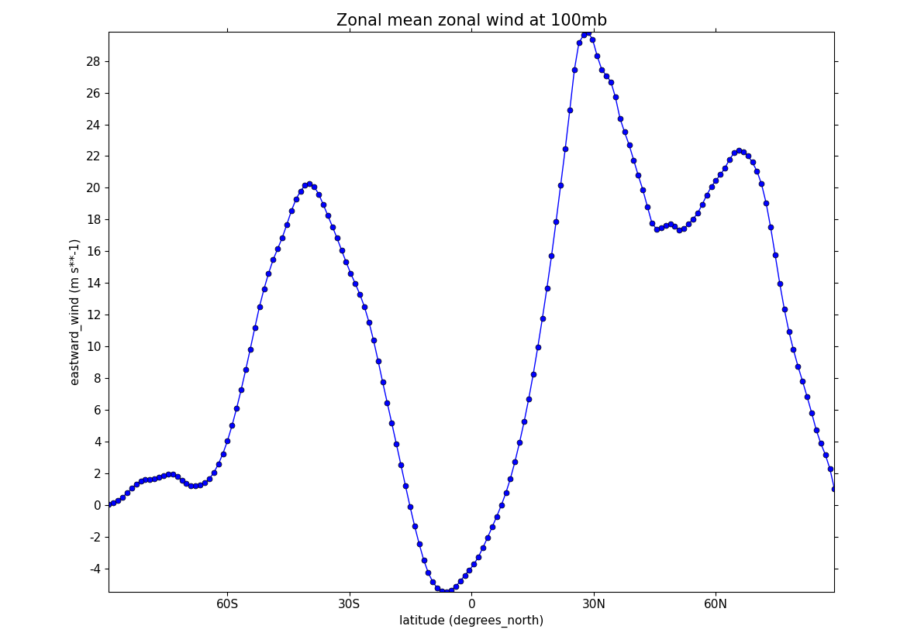
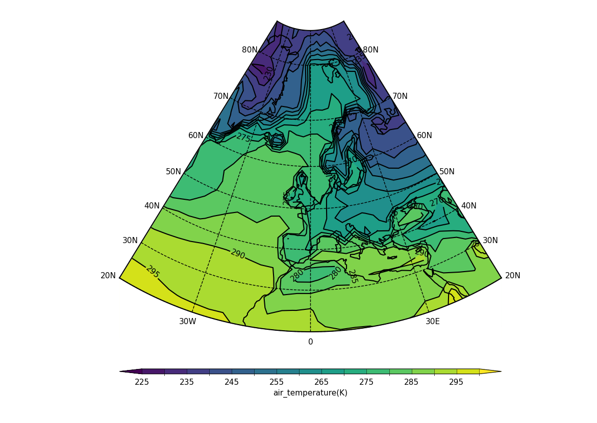
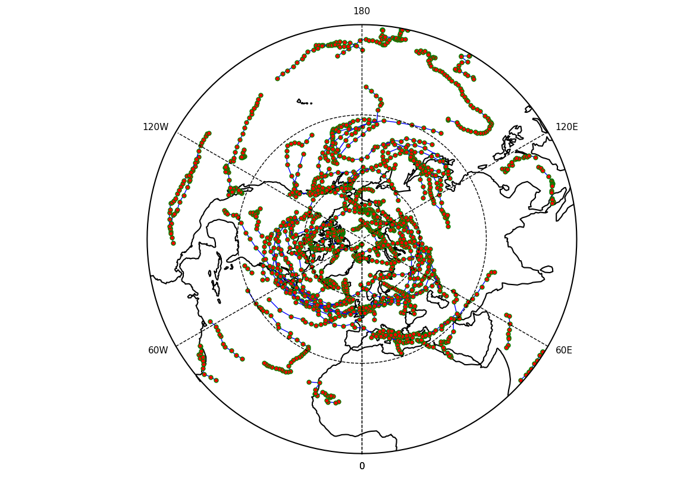
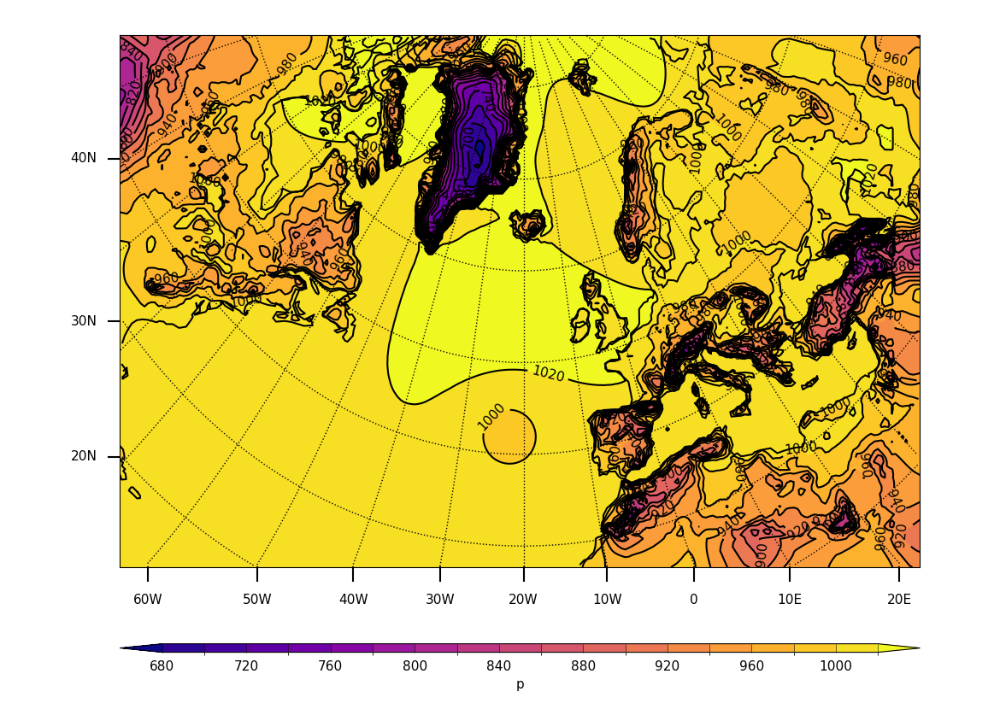
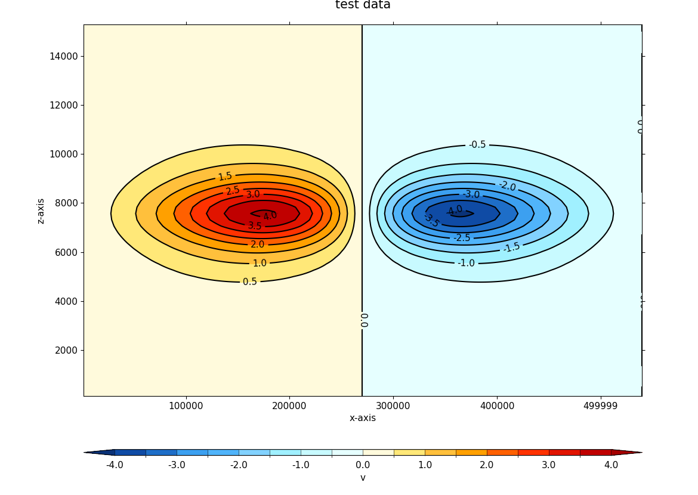

Gallery of examples#
Gallery#

Contour plots

Blockfill plots

Vector plots

Stream plots

Stipple plots

Trajectories

Hovmöller plots

Vertical (pressure or height) plots

Lineplots

Support for multiple projections

Polar projection views

Unstructured grids (UGRID) support

Rotated pole support

Multiple plots on one figure

Flexible customisation e.g. user-defined axes
Listing of all examples#
Note: all example code assumes the following imports have been made,
where numpy is usually not required but it may be for some examples:
Imports required as setup for the examples, noting that
cfplot is always aliased to
cfp by convention#import cfplot as cfp
import cf
import numpy as np # only required for some examples
- Example 1: Basic contour plot in default projection
- Example 2: Basic blockfill plot in default projection
- Example 3: Contour plot with altered map limits and levels
- Example 4: North Pole polar stereographic projection contour plot
- Example 5: South Pole polar projection contour plot with bounding latitude
- Example 6: Latitude-pressure plot at set longitude
- Example 7: Latitude-pressure plot over zonal mean
- Example 8: Latitude against log of pressure over longitude zonal mean
- Example 9: Longitude-pressure plot over latitude mean
- Example 10: Latitude-time Hovmöller plot
- Example 11: Latitude-time subset view Hovmöller plot
- Example 12: Longitude-time Hovmöller plot
- Example 13: Basic vector plot
- Example 14: Vector plot overlaid on a contour map
- Example 15: Polar projection vector plot
- Example 16a: Zonal vector plot
- Example 16b: Basic stream plot
- Example 16c: Stream plot in a colour scale
- Example 17: Basic stipple plot
- Example 18: Polar stipple plot
- Example 19a: Multiple plots
- Example 19b: Multiple plots with user-specified plot positions
- Example 19c: Accomodating more than one colour bar
- Example 20: Case where user-defined axis labels are required
- Example 21a: User-defined axes
- Example 21b: Plot of rotated pole data
- Example 22: Plot of rotated pole data on its native grid
- Example 23a: Rotated pole plot from data which is not CF Compliant
- Example 23b: Overlaying vectors over a rotated pole data plot
- Example 24a: UGRID blockfill plot with LFRic cubed sphere mesh output
- Example 24b: UGRID plot in the polar stereographic projection view
- Example 25: UGRID contour plot with ORCA 2 output
- Example 26a: Contour plot based on discrete feature values
- Example 26b: Contour plot from discrete feature values with labelling
- Example 27: Basic line plot
- Example 28: Line plot with a legend
- Example 29: Time series line plot
- Example 30: Line plot with two x axes
- Example 31: UKCP projection
- Example 32: UKCP projection with blockfill
- Example 33: OSGB and EuroPP projections
- Example 34: Cropping the Lambert Conformal Conic (LCC) projection
- Example 35: Mollweide projection
- Example 36: Mercator projection
- Example 37: Orthographic projection
- Example 38: Robinson projection
- Example 39: Basic track plotting
- Example 40: Tracks in the polar stereographic projection
- Example 41: Feature propagation over Europe
- Example 42a: Tracks with labelled data points
- Example 42b: Tracks displayed in a colour scale
- Example 43: CF-compliant WRF model output data